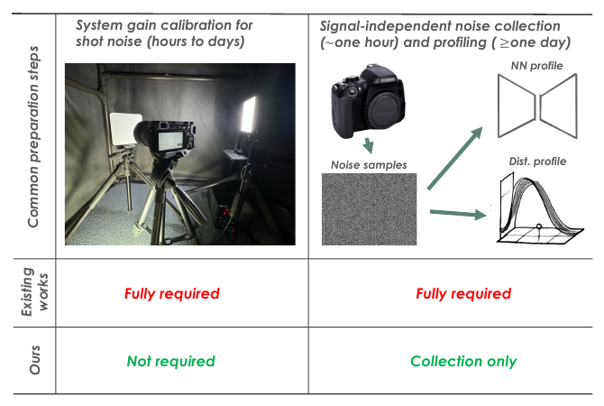
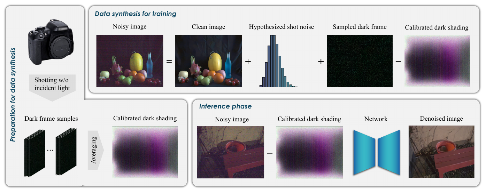
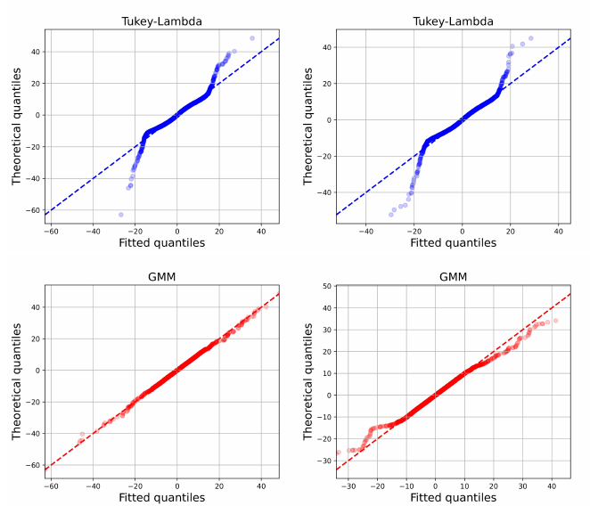
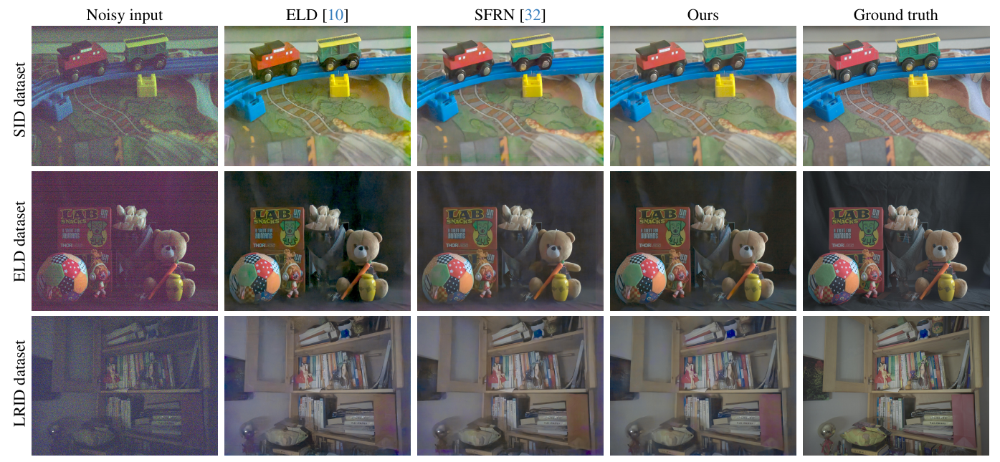
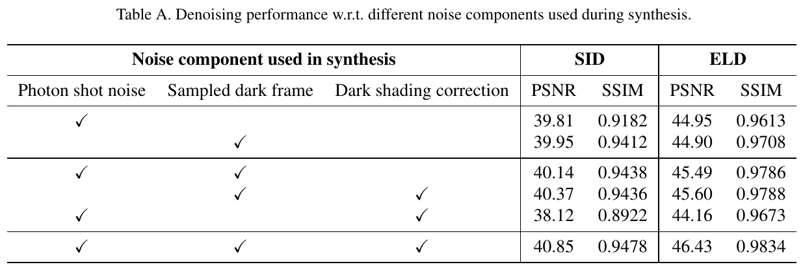
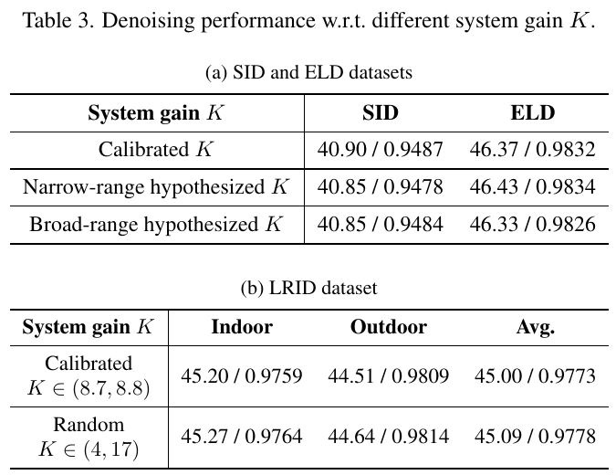
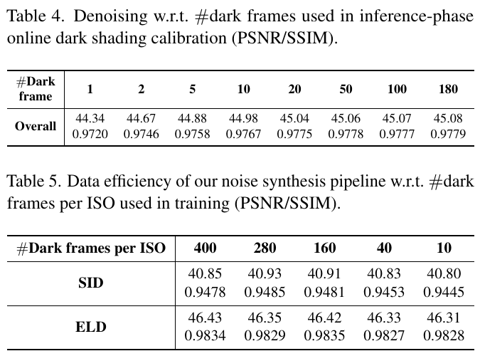
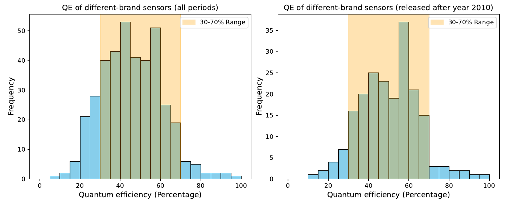

论文
Noise Modeling in One Hour：只拍暗场帧、按量子效率猜系统增益，合成低光 RAW 去噪训练数据

代码来源说明：官方仓库 SonyResearch/raw_image_denoising（MIT）只包含评测：两个测试脚本、SID / ELD / LRID 的评测数据集类、SID 论文的 U-Net，以及从 PMN 仓库继承来的一批工具函数。本页
repo/是 commit13a05f9（2025-06-18）。训练和噪声合成代码没有发布，作者在 issue #3（2025-05-19）里说明是商业原因。仓库里能找到的加噪函数（datasets/process.py的generate_noisy_obs、raw_wb_aug、HighBitRecovery）是 PMN / ELD 一路的基线实现，没有任何脚本调用它们。和本文管线最接近的公开代码，是第一作者在 issue #4 里指向的 AIM 2025 低光 RAW 去噪挑战赛基线 SonyResearch/AIM2025_Denoise_Challenge，README 写明它的数据合成「based on the method proposed here」并链接本文 arXiv。本页
repo-aim2025/是 commit5d6531d（2025-07-16）。issue 里给的旧地址feiran-sony/AIM2025_denoise_challenge已经 404，仓库迁到了 SonyResearch 组织下，旧链接里的 commit 也不在新历史中。下文凡是引repo-aim2025/的代码，都是挑战赛基线，不是论文实验的代码，两者至少在 K 的取法上不同（§2.2、§4）。
专项定位：本页属于「手机照片 → 相机画质：细节与质感迁移」专项（入口 phone2camera-2026）。专项 §6 第 (5) 步要从真实目标相机 RAW 反向合成「伪 iPhone RAW」，最后一步是「加实测 iPhone 噪声，按 ISO、按 Bayer 通道标定」；第 (7) 步要按 ISO 分档比较方差—亮度曲线，评测噪声像不像目标相机。已读过的几篇都只描述噪声的方差：unprocessing-2018 用两项泊松-高斯，参数沿 DND 元数据的 log-log 直线采样；raw-degradation-sr-2026 用色卡连拍按 7 档 ISO 拟合异方差高斯；merit-2026 的 SANM 直接比较平坦区的方差—亮度直方图；handheld-mfsr-2019 的鲁棒性判断要用标定好的 α、β；noisediff-2025 从配对数据里学一个噪声生成器。本文走另一条路：信号无关部分不写公式，直接拿暗场帧当样本。本页要回答三件事：「一小时」到底拍了什么；这套做法搬到 iPhone 和目标相机上要满足什么条件；哪些部分仍然必须标定。
准备
每档模拟增益（ISO）遮光拍一批暗场帧，逐像素平均得到暗影（dark shading）。不做平场标定，不拟合噪声分布，不做高位深恢复。
合成
干净 RAW 除以数字增益模拟「暗」，按猜出的 K 做泊松抽样得到散粒噪声，再加一张随机抽取、已减掉暗影的暗场帧，最后乘回数字增益。推理时输入先减同一份暗影。
结果
SID / ELD 平均 40.85 / 46.43 dB，与 PNNP 打平，比 ELD 物理模型高 1.80 / 1.99 dB；LRID（手机传感器）45.08 dB，比 PNNP 高 0.54，比真实配对训练的 PMN 高 0.11。K 放大两倍，PSNR 变化不到 0.1 dB。
代码现实
训练代码不公开，只能复现评测。作者后来的挑战赛基线用同一套暗场帧采样，但 K 用平场标定。SID / ELD 评测用 PMN 发布的参数化暗影，LRID 的热 / 常温暗影按硬编码的场景列表挑选。
1. 出发点 (Motivation)
低光 RAW 去噪最好的训练数据是真实配对：同一场景一张短曝光噪声图、一张长曝光干净图（SID 的做法）。配对要三脚架、静态场景、逐张对齐，拍起来很贵，所以「在干净 RAW 上合成噪声」成了主流替代。合成要像真，就得针对具体传感器建模，这通常有两道准备 [§1]：
- 系统增益 K 的标定。 散粒噪声的方差等于 K 乘信号均值（§2.2），K 不知道，噪声轻重就定不下来。标准做法是在受控光照下拍平场或 ISO 15739 噪声测试卡，用「方差—均值」直线的斜率求 K。论文说，如果是相机模组板、内窥镜这类形状不规则的设备，光是做固定装置就要几天。
- 信号无关噪声的剖面。 遮光拍一批暗场帧，然后要么挑一个统计分布去拟合（ELD 用 Tukey-λ 描述读出噪声的长尾），要么训练一个中间网络来生成（StarLight、LLD、PNNP 等）。论文估计采集约一小时，剖面至少一天。
作者的目标是：去噪效果不打折，准备工作压到只剩「拍暗场帧」这一步，而这一步在现代相机上可以全自动跑完。论文列了三条贡献 [§1]：(1) 用「假设量子效率」代替系统增益标定来合成散粒噪声，并论证参数化剖面的固有局限和高位深恢复的多余；(2) 合起来得到一条只需暗场帧的合成管线；(3) 大量实验和消融。论文说这是第一个把传感器噪声合成里所有昂贵的标定和剖面步骤都去掉的方法。
暗场帧 (dark frame)
遮住全部入射光（盖镜头盖），用指定 ISO 和快门拍的 RAW。里面只有黑电平加上各种和光无关的噪声。
暗影 (dark shading)
同一档 ISO 的许多暗场帧逐像素取平均得到的偏置图，包括黑电平误差和固定模式噪声。训练时从暗场帧里减掉，推理时从噪声图里减掉。
系统增益 K
每个光电子最后变成多少个数字码值（DN/e⁻）。散粒噪声的方差 = K × 信号均值，K 越大噪声越重。
模拟增益 AG / 数字增益 dgain
AG 在读出电路里放大模拟信号，ISO 主要映射到它。dgain 是拍完后对数字图乘一个常数提亮，SID 的 ×100 / ×250 / ×300 就是 dgain。
量子效率 QE
到达像素的光子里有多大比例变成了电子。现代背照式传感器多在 30%–70%。
平场 / 光子转移法
拍均匀照明的白面，在不同亮度下统计像素的均值和方差，方差—均值直线的斜率就是 K。
HBNR
高位深噪声恢复（来自 SFRN）。先给暗场帧拟合一个简单分布，再按分位点把整数码值抖成实数，模拟量化前的噪声。
自监督（本文语境）
训练时不用真实的噪声—干净配对，只用干净图加合成噪声。和 Noise2Noise 那种只用噪声图训练的自监督不是一回事。
Tukey-λ 分布
ELD 用来描述读出噪声长尾的一族分布，参数 λ 控制尾巴有多厚。
2. 方法 (Method)

2.1 成像模型：信号相关与信号无关两块
论文沿用 ELD 和 Wang et al.（ECCV 2020）的噪声成像模型 [§3.1]：
—— 翻译: 最终码值 D 由四步得到：场景给出 X 个光子（带散粒噪声 N_p），读出电路之前混进暗电流、热噪声 N_1，整体被模拟增益 K_a 放大，之后再混进条带、量化这类读出端噪声 N_2，最后乘数字增益 K_d 提亮。ADC 这一步被省略了。
令 \(K_d = 1\)，整理成两块：
—— 翻译: 第一块随亮度变化，只有在有光时才存在；第二块和场景亮度无关，遮光拍的暗场帧里就是它的全部。
这个拆法决定了整篇的策略。信号无关的那一块，暗场帧本身就是它的样本，不必知道它由几种成分组成、各自服从什么分布；需要光才能测的只剩散粒噪声，而散粒噪声的形状是物理定律给定的泊松分布，唯一的未知数是 K。所以问题就收缩成两个：K 能不能不测，暗场帧能不能直接用。
类比：把传感器想成一排在雨里接水的量杯。雨滴落进来的数量是随机的，这是散粒噪声，雨越大，绝对波动越大；量杯本身有一点渗水和底部积水，这是暗电流；读刻度的人手会抖，刻度只到整数，这是读出和量化。盖上盖子拍暗场帧，相当于不下雨时去读一遍所有量杯，渗水、手抖、刻度误差全都记录下来了。
2.2 散粒噪声：K 不标定，按量子效率猜一个
散粒噪声服从泊松分布。设 \(I = K_a X\) 是不含噪声的干净图（单位是码值），散粒噪声图可以这样生成 [§3.2, Eq. 4–5]：
—— 翻译: 把干净图除以 K 换算回「电子数」，按泊松分布抽一个整数，再乘回 K 变成码值。电子数越少，相对波动越大，这就是暗处噪声显眼的原因。
难点在 K。论文提出两条观察：
观察 1：K 的取值范围很窄。 论文写 [Eq. 6]：
—— 翻译: 系统增益等于量子效率乘模拟增益。AG 是用户设定的，已知；QE 对现代传感器多在 30%–70%（补充材料图 A），所以给定 AG 时 K 的最大可能值和最小可能值只差约两倍。
观察 2：K 只影响噪声轻重，不引入亮度偏差。 对 \(K(X+N_p)\) 且 \((X+N_p) \sim \mathcal{P}(I/K)\)：
—— 翻译: 不管 K 取多少，噪声图的均值都是干净图本身；K 只改变方差，而且是线性地放大。所以用错了 K，网络学到的只是「噪声偏轻或偏重」，不会学到「整体偏亮或偏色」这种系统偏差。
于是做法很简单：给定 AG，假设一个 QE（比如 50%），乘出 K，代进 Eq. 5 生成散粒噪声。论文把它解释为一种按 AG 扰动的数据增广，正好适合「一个网络覆盖整条 ISO 范围」的设定 [§3.2]。
数值例子：设 ISO 6400，按论文给 A7S2 用的公式 K = 6400/100 × 0.1 = 6.4。某个像素除以数字增益后的干净值 I = 64 DN，换成电子是 10 个，泊松抽样的标准差 √10 × 6.4 ≈ 20.2 DN，相对噪声 32%。如果 K 猜成两倍（12.8），电子数变成 5，标准差 √5 × 12.8 ≈ 28.6 DN，比原来大 √2 倍，而均值仍是 64 DN。这就是观察 2：错的 K 只让噪声「粗」一点。
A7S2 上的具体取值：论文说不知道这两台相机怎样把模拟增益封装成 ISO，于是「经验地考察了它们的特性」，认定两台的基础 ISO（AG = 1）都在 400 左右，取 K = ISO/100 × 0.1，相当于假设 QE = 40% [§4.1]。
这条推理在物理上站不住，但数值上碰巧贴着标定值。 按论文自己引用的 EMVA 1288 标准，K 的单位是 DN/e⁻，即每个电子对应多少码值；方差—均值关系是 \(\sigma_y^2 = K^2\sigma_d^2 + \sigma_q^2 + K(\mu_y - \mu_{y.\text{dark}})\)，斜率就是 K，QE 不出现在里面。QE 进入的是响应度 \(R = K\eta\)（每个光子对应多少码值）。光子先按 QE 被「筛」成电子，筛过之后电子数仍是泊松的，所以噪声方差只由 DN/e⁻ 决定。论文的 Eq. 6 实际把 K 和 R 混在了一起。数值上之所以能用，是因为 0.1 这个系数是对着 A7S2「经验调查」出来的：仓库里 PMN 的基线代码把 A7S2 的标定 K 写成 0.0009546 * iso - 0.00193（repo/datasets/process.py:L1079），ISO 6400 时是 6.11，ISO 25600 时是 24.44（论文 Table 3 写 ≈ 24.48），论文公式给出 6.4 和 25.6，只高约 5%。真正决定 K 的是基础增益下的 DN/e⁻，它取决于满阱容量和 ADC 量程怎样对应，是厂商的设计选择，QE 的统计分布约束不了它。所以「QE 在 30%–70%，K 误差就不超过两倍」这个论证不能直接搬到别的传感器上；本文两台设备都落在范围内，只是在 LRID 上作者干脆没用公式，而是在 (4, 17) 里随机取 K（§3）。
下面是挑战赛基线里的合成函数。它和论文 Eq. 5 加上「信号无关噪声 = 一张暗场帧」完全对应：
repo-aim2025/datasets/synth_train_dataset.py:L80-L85 — 合成一张低光噪声图：除以数字增益 → 泊松散粒噪声 → 加暗场帧 → 乘回数字增益（挑战赛基线，非论文实验代码）
def noise_synthesis(self, clean, dark_frame, dgain, sys_gain, wl, bl):
img = np.clip(clean, 0, 1) * (wl - bl) / dgain # synth darkness in un-normalized range
short_noisy = np.random.poisson(img / sys_gain) * sys_gain - img
img = img + short_noisy + dark_frame
img = img / (wl - bl) * dgain
return img
第 2 行把归一化的干净图换回码值再除以数字增益，相当于「同一场景曝光少了 dgain 倍」。第 3 行就是 \(K\mathcal{P}(I/K) - I\)，即散粒噪声本身。第 4 行加上暗场帧，第 5 行归一化并乘回 dgain，让噪声图和干净图亮度一致。issue #4 里作者也是这样解释的：先把干净图除以目标数字增益，「好像又暗又干净」，加暗场帧，再乘回去。注意这里的 sys_gain 不是猜的：同一个文件 L46-L49 从 calib_res/sys_gain.npz 读入「flat-field calibrated system gain」，而且是 R、Gr、Gb、B 四个通道各一个值。
2.3 信号无关噪声：拍暗场帧，直接抽
论文跟随 SFRN（Zhang et al., ICCV 2021），用目标传感器拍许多暗场帧，每一张都当作 \(K_a N_1 + N_2\) 的一个直接样本 [§3.3]。这样读出噪声的长尾、行噪声、量化台阶、热像素，以及任何空间相关性，都原样保留在样本里，不需要知道它们各自服从什么分布。
再加一步暗影校正：把同一档增益的许多暗场帧平均，得到暗影，训练时从暗场帧里减掉，推理时从输入里减掉。这样网络不用去学每个像素固定的偏置。暗影就用采噪声的那批暗场帧来算，不需要额外采集。挑战赛基线的暗影计算如下：
repo-aim2025/noise_calib/calib_dark_shading.py:L61-L69 — 暗影 = 同一 ISO 下所有暗场帧减黑电平后的逐像素平均（挑战赛基线）
for data_id, img_dir in enumerate(tqdm(all_file)):
bayer, bl, wl = load_one_raw(img_dir)
bayer = np.float32(bayer - bl)
all_bayer = bayer if data_id == 0 else all_bayer + bayer
## for vis
if data_id in nimg_for_plot:
var_for_plot.append(np.var(all_bayer / data_id))
dark_shading = all_bayer / (len(all_file) - fail_count)
var_for_plot 记录的是「前 n 帧平均图」的方差随 n 的变化，用来看平均的帧数够不够：随机噪声会按 1/n 衰减，剩下的就是真正固定的那部分。训练时，暗场帧要先减黑电平、减暗影，再随机裁一块：
repo-aim2025/datasets/synth_train_dataset.py:L103-L113 — 随机抽一张同 ISO 的暗场帧，减暗影和黑电平，只留零均值的信号无关噪声（挑战赛基线）
##---- STEP 2: load a random noise frame, subtract bl and dark shading to get signal-independent noise, and crop
dark_raw_file = rawpy.imread(random.choice(self.dark_frame_dirs[f"{cam_model}_iso{iso}"]))
dark_wl, dark_bl = float(dark_raw_file.white_level), np.mean(dark_raw_file.black_level_per_channel)
dark_frame = np.array(dark_raw_file.raw_image).astype(np.float32)
dark_frame = (
dark_frame - self.dark_shadings[f"{cam_model}_iso{iso}"] - dark_bl
) # pre-subtract and no need to do so on noise synthsis
dark_frame = dark_frame[h_start:h_end, w_start:w_end]
dark_frame = self.pack_raw(dark_frame, wl=dark_wl, bl=dark_bl, norm=False, clip=False) # [h, w, c]
抽样粒度：代码每次抽一整张暗场帧，再随机裁一个 512×512 块（L121），裁剪位置和干净图的裁剪位置无关。作者在 issue 里前后给过两种说法：issue #7 被问「是否在 100 张暗场帧堆成的张量上逐像素沿帧轴随机取」时答「Yes exactly」；issue #8 改说每次迭代随机选一整张，并解释逐像素随机取「有可能破坏」像素间的噪声相关性，两种方式没做过对比。按代码和后一种解释，应该整张抽。
不做 HBNR [§3.3]。SFRN 的高位深恢复要先给暗场帧拟合简单分布，再按分位点扰动，等于又把剖面请了回来。作者不用它，理由有两条：拟合的分布和真实分布之间本来就有差距，会带进新误差；推理时的噪声图本身就是低位深的，量化噪声已经编码在里面，暗场帧的低位深恰好是对量化噪声的真实描述。
评测时减的暗影从哪来。 论文说为了公平，「训练和测试全程使用 PMN 提供的暗影」[§4.1]。仓库里 SID / ELD 的评测确实如此，但这份暗影不是图 2 里的「直接平均」，而是 PMN 的参数化模型：
repo/datasets/real_dataset.py:L75-L79 — SID 评测时减的暗影：PMN 的逐像素线性模型 k·ISO + b，再加每档 ISO 的黑电平误差，以 ISO 1600 为界分两段
def get_darkshading(self, iso):
if iso <= 1600:
return self.pmn_dsk_low * iso + self.pmn_dsb_low + self.pmn_ble[iso]
else:
return self.pmn_dsk_high * iso + self.pmn_dsb_high + self.pmn_ble[iso]
ELD 的评测类（L175-L179）是同一段代码，读的也是同一组 resources/SonyA7S2/darkshading_* 文件（L52-L58 与 L160-L166）。而论文 §4.1 明确说 SID 和 ELD 是两台不同的 A7S2 拍的，训练用的暗场帧又来自第三个来源（LLD 数据集）。所以 SID / ELD 的数字并不是「本机拍暗场、本机平均出暗影」这条完整流程跑出来的，§4 第 3 条会再讨论这件事。
2.4 被省掉的部分：参数化剖面和 HBNR
省掉的东西长什么样？仓库里留着 PMN / ELD 一路的参数化合成函数，可以直接对照：
repo/datasets/process.py:L1259-L1281 — ELD 式参数化合成：泊松散粒 + Tukey-λ 或高斯读出噪声 + 行噪声 + 均匀量化噪声 + 偏置，由 noise_code 字母开关（仓库内的基线代码，没有被调用）
if use_P: # 使用泊松噪声作为shot noisy
noisy_shot = np.random.poisson(MFM * y / p["K"]).astype(np.float32) * p["K"] / MFM
else: # 不考虑shot noisy
noisy_shot = (
y + np.random.randn(*y.shape).astype(np.float32) * np.sqrt(np.maximum(y / p["K"], 1e-10)) * p["K"] / MFM
)
if not use_black:
if use_TL: # 使用TL噪声作为read noisy
noisy_read = stats.tukeylambda.rvs(p["lam"], scale=p["sigTL"] / MFM, size=y.shape).astype(np.float32)
else: # 使用高斯噪声作为read noisy
noisy_read = stats.norm.rvs(scale=p["sigGs"] / MFM, size=y.shape).astype(np.float32)
# 行噪声需要使用行的维度h，[1,c,h,w]所以-2是h
noisy_row = np.random.randn(y.shape[-3], y.shape[-2], 1).astype(np.float32) * p["sigR"] / MFM if use_R else 0
noisy_q = np.random.uniform(low=-0.5, high=0.5, size=y.shape) if use_Q else 0
noisy_bias = p["bias"] if use_D else 0
else:
noisy_read = 0
noisy_row = 0
noisy_q = 0
noisy_bias = 0
# 归一化回[0, 1]
z = (noisy_shot + noisy_read + noisy_row + noisy_q + noisy_bias) / (p["wp"] - p["bl"])
每一项都要事先标定：K、Tukey-λ 的 λ 和 σ_TL、行噪声 σ_R、偏置，且都要按 ISO 拟合回归线（sample_params L955-L1023 里 σ 都是 log K 的线性函数）。本文把读出、行、量化、偏置四项整个换成「一张减过暗影的暗场帧」。
论文用实验说明剖面为什么不如直接采样 [§4.4]。在 A7S2 的暗场帧上随机取 50 帧、中心裁 512×512，先按 PNNP 的方式拆掉暗影和条带噪声，只拿剩下的独立同分布成分去拟合两种模型：ELD 用的 Tukey-λ，以及 100 个分量、允许非对角协方差的高斯混合（GMM）。

去噪结果与 QQ 图一致（论文 Table 6，PSNR）：SID 上 Tukey-λ 40.56、GMM 40.54、直接采样 40.85；ELD 上 45.63、45.92、46.43。直接采样领先 0.3–0.8 dB。作者的解释是：模型是在暗场帧上拟合的，重采样出来的东西本质上是「新的暗场帧」，真实度和多样性都比不上传感器直接拍的。
HBNR 的消融（论文 Table 7，PSNR）：加不加 HBNR，SID 40.91 对 40.85，ELD 46.38 对 46.43，LRID 45.03 对 45.08，差距都在 0.1 dB 以内，SID 上加了反而略高 0.06 dB。所以 HBNR 在这条管线里没有明显好处；SFRN 里它对 P-G、ELD 式合成很重要，可能是因为那些合成器本身缺量化台阶。
2.5 「一小时」到底包含什么
论文标题说一小时，正文的说法并不一致：图 1 说暗场帧采集「finishable within even one hour」，§3.3 说「can be completed in a few hours」。论文没有给任何计时，实验用的暗场帧也都不是作者自己拍的。按论文、代码和 issue 把这一步拆开：
| 步骤 | 本文是否需要 | 论文实验里实际用的是什么 | 说明 |
|---|---|---|---|
| 暗场帧采集 | 需要，每档模拟增益（ISO）一批 | SID / ELD：借用 LLD 数据集的 A7S2 标定数据，「约 400 帧/ISO，共 24 档 ISO」[§4.1]；LRID：数据集自带的 ISO 6400 暗场帧，180 张常温 + 180 张热态；挑战赛：每台相机每档 ISO 50 帧，5 档 ISO | 每档 10 帧时 SID / ELD 只掉 0.05 / 0.12 dB（Table 5），「一小时」大概对应这种规模 |
| 暗场帧的曝光时间 | 论文没说 | issue #4 提到 LLD 文件夹名为 LLD_BiasFrame_ET_1_30，即 1/30 s |
暗电流随曝光时间和温度增长，暗场帧的曝光应该接近要处理的照片 |
| 遮光方式 | 「Shotting w/o incident light」（图 2） | 未说明 | 要保证完全无光：盖镜头盖，单反关目镜遮光片 |
| 暗影 | 需要，用同一批暗场帧平均 | SID / ELD 用 PMN 发布的参数化暗影（§2.3）；LRID 用 ds_6400.npy 和 ds_6400_hot.npy |
不需要额外拍摄 |
| 系统增益 K | 不标定，但要知道 ISO 和 AG 的对应 | A7S2：作者经验认定基础 ISO ≈ 400，K = ISO/100 × 0.1；LRID：K 在 (4, 17) 随机 | 论文 §5 自己承认：消费相机和手机通常只给 ISO，AG 藏在里面 |
| 噪声分布剖面、HBNR | 不需要 | — | §2.4 |
| 干净图 | 需要 | SID 长曝光；LRID 由 ISO 100 多帧融合得到的真值 | 和噪声准备无关，但决定能学到什么场景 |
所以「一小时」准确的意思是：在 AG 已知、相机能自动连拍的前提下，每档 ISO 拍十几到几十张暗场帧，总共不超过一小时（这是按 Table 5 推出的读法，论文没有写明帧数和时长）。它省掉的是平场装置和剖面拟合，没有省掉「知道 AG」这个前提。
2.6 噪声分量逐项对照
| 分量 | 物理来源 | ELD 式参数化合成（仓库内基线代码） | 本文 |
|---|---|---|---|
| 光子散粒噪声 | 光子到达的随机性 | 泊松，K 按 ISO 标定 | 泊松，K 按 QE × AG 假设 |
| 读出噪声（含长尾） | 读出电路、源跟随器 | Tukey-λ 或高斯，σ 是 log K 的线性函数 | 暗场帧里自带 |
| 行噪声 / 条带 | 列 / 行读出电路不一致 | 每行一个高斯偏移 σ_R | 暗场帧里自带（整张抽样，行结构保留） |
| 量化噪声 | ADC 取整 | 均匀分布 ±0.5 DN | 暗场帧本身是整数，不做 HBNR |
| 黑电平误差、固定模式 | 逐像素、逐 ISO 的固定偏置 | 偏置项 bias |
暗影，训练和推理两端都减掉 |
| 暗电流及其散粒噪声 | 热激发电子，随曝光时间和温度增长 | 不单列 | 只有暗场帧曝光和温度与实拍一致时才对 |
| 热态漂移 | 连拍或长曝光让传感器升温 | 无 | LRID 单独提供热态暗场帧和热态暗影；Table 4 讨论推理时临时重拍暗影 |
| 光响应不均（PRNU） | 像素灵敏度差异，与信号成比例 | 无 | 无 |
| 空间相关 | 串扰、读出结构 | 只有行噪声 | 暗场帧部分保留；散粒噪声部分逐像素独立 |
两个空缺要记住：PRNU 是和信号成比例的固定模式，暗场帧拍不到它；散粒噪声被当成逐像素独立，像素串扰带来的相关性没有建模。这两项在极暗光下都可以忽略，信号一强就未必（§5）。
2.7 消融决策表
| 组件 | 起点 | 消融方向 | 最终选择 | 为什么 |
|---|---|---|---|---|
| 系统增益 K | 平场标定（SID/ELD 最大 ≈ 24.48；LRID ≈ 8.74） | 假设 K（×1、×2），随机 K ∈ (4, 17) | 假设 K | 三个数据集差距都不到 0.1 dB（Table 3）；但 SID/ELD 的「窄范围假设」与标定值只差约 5%，真正的考验只有 ×2 和 LRID 的随机范围 |
| 信号无关噪声 | 统计剖面（Tukey-λ、GMM） | 直接采样暗场帧 | 直接采样 | 比 Tukey-λ 高 0.29 / 0.80 dB，比 GMM 高 0.31 / 0.51 dB（SID/ELD，Table 6）；剖面重采样的泛化不足（图 3） |
| 高位深恢复 HBNR | SFRN 的做法 | 去掉 | 去掉 | 三个数据集差距不到 0.1 dB（Table 7），去掉后少一次分布拟合 |
| 暗影校正 | 不做 | 做 | 做 | 去掉后 SID / ELD 掉 0.71 / 0.94 dB（Table A） |
| 散粒噪声 | 只用暗场帧 | 加泊松散粒 | 加 | 去掉后掉 0.48 / 0.83 dB（Table A） |
| 训练用暗场帧数量 | 每 ISO 约 400 帧 | 280 / 160 / 40 / 10 | 10 帧也够 | 10 帧时掉 0.05 / 0.12 dB（Table 5）；作者的解释是合成对数 = 干净图数 × 暗场帧数 |
| 推理时暗影的帧数 | 180 帧 | 1–100 帧 | 10 帧以上 | 10 帧只掉 0.10 dB，2 帧仍高于所有自监督方法（Table 4） |
3. 结论 (Key findings)
主结果。所有方法都用 SID 论文的 U-Net，PSNR（dB）如下，列出各数据集的平均值（论文 Table 1、Table 2）：
| 训练方式 | 方法 | SID 平均（×100/×250/×300） | ELD 平均（×100/×200） | LRID 总平均 |
|---|---|---|---|---|
| 监督（真实配对） | Paired | 39.32 | 43.22 | 44.52 |
| 监督（真实配对） | PMN | 40.59 | 45.92 | 44.97 |
| 混合（合成预训练 + 少量配对微调） | LED | 39.19 | 44.17 | — |
| 混合 | LLD | 40.52 | 45.85 | — |
| 自监督（只用合成） | P-G | 34.52 | 40.12 | 42.23 |
| 自监督 | ELD | 39.05 | 44.44 | 43.53 |
| 自监督 | SFRN | 40.14 | 45.51 | 44.12 |
| 自监督 | NoiseFlow | 37.09 | 41.90 | 43.72 |
| 自监督 | StarLight | 36.33 | 42.33 | — |
| 自监督 | PNNP（同期工作） | 40.83 | 46.39 | 44.54 |
| 自监督 | 本文 | 40.85 | 46.43 | 45.08 |
- SID / ELD 上与 PNNP 打平：平均只高 0.02 / 0.04 dB，SID ×250 还低 0.06 dB。比 ELD 物理模型高 1.80 / 1.99 dB，比 SFRN（同样直接采样暗场帧，但有 HBNR、没有暗影校正）高 0.71 / 0.92 dB。
- 比真实配对训练的 PMN 还高：SID 高 0.26 dB，ELD 高 0.51 dB。论文归因于 SID 训练配对的像素对齐不完美。
- LRID 上领先最明显：比 PNNP 高 0.54 dB，比 PMN 高 0.11 dB。最暗的室内 ×1024 档是 40.85，PNNP 40.30，PMN 40.20，ELD 37.50。论文的解释是：传感器发热会让噪声图样逐张变化，直接采样的暗场帧覆盖了这种变化，剖面方法覆盖不了 [§4.2]。LRID 是 Redmi K30 上 1/2.55 英寸的 IMX686，是本文唯一的手机传感器。
- 与 NoiseDiff 并排：noisediff-2025 的 Table 1 用同一个 U-Net、同样的 SID / ELD 测试集，ELD 和 PMN 两行与本文逐位相同，协议基本一致。它减暗影、用 PMN 增益标定的 NoiseDiff* 是 43.92 / 41.28 / 37.94（SID）和 46.95 / 45.11（ELD）；本文是 43.69 / 41.43 / 38.06 和 47.34 / 45.51，5 列里 4 列高 0.12–0.40 dB，只在 SID ×100 低 0.23 dB。NoiseDiff 的生成器要用 SID 的真实配对来训练，本文只要暗场帧。
- 同名基线的实现差异比方法差距还大：同样叫 P-G，本文表里 SID 是 39.44 / 34.32 / 30.66，NoiseDiff 表里是 41.05 / 36.63 / 33.34，差 1.6–2.7 dB。读这类表时，同一张表内的比较才可靠。

各噪声分量的贡献（补充材料 Table A）：

对 K 的鲁棒性（Table 3）：

暗场帧要多少（Table 4、Table 5）：

QE 的统计依据（补充材料图 A）：

一句话总结：在极暗光（数字增益 64–1024 倍）、AG 已知的条件下，「泊松散粒 + 直接采样暗场帧 + 暗影校正」三件事就足以追平或超过需要复杂剖面的方法；暗场帧数量和 K 的精度都不敏感，暗影校正和暗场帧本身才是关键。
4. 实现细节 (Implementation notes)
论文与代码、论文内部的出入，按对复用的影响排序：
-
训练和合成代码不公开。 issue #3 作者答复「we won't be able to release the training code for commercial reasons」。官方仓库只有评测：
test_denoise_sideld.py、test_denoise_lrid.py、datasets/real_dataset.py和models/ELD_models.py（SID U-Net，nf=32，L6-L7）。datasets/process.py里的加噪函数和HighBitRecovery（L1338 起）是 PMN 基线，没有被任何脚本引用。只有get_dataset_infos.py从它 import 了工具函数（L11）。论文的训练设置只能照正文复现：512×512 随机裁剪、L1 损失、Adam、1000 个 epoch、上下左右翻转 [§4.1]。 -
作者自己的后续基线把 K 改回了平场标定。 挑战赛基线 README 写「signal-dependent noise is synthesized as a Poisson noise using calibrated gains」，代码从
calib_res/sys_gain.npz读入每台相机、每档 ISO、每个 Bayer 通道的 K（repo-aim2025/datasets/synth_train_dataset.py:L46-L49），仓库还附带了平场标定脚本（§6.2 引用）。也就是说，论文的核心卖点「K 不用标」，在作者自己面向多台相机的公开实现里没有沿用。挑战赛面对的正是消费级相机（Sony A7R IV、A6700、ZV-E10M2、Canon 70D，见 AIM 2025 报告 arXiv:2510.06601），和论文 §5 的局限一致：只给 ISO、不给 AG，就只能标。 -
SID / ELD 评测用的暗影是 PMN 的参数化模型，两台机身共用一份。 见 §2.3 的代码：暗影 =
k·ISO + b + BLE[ISO]，以 ISO 1600 分两段（repo/datasets/real_dataset.py:L75-L79），SID 和 ELD 的评测类读同一组文件（L52-L58、L160-L166）。论文图 2 描述的却是「本机暗场帧直接平均」。再加上训练暗场帧来自 LLD 数据集，这组 SID / ELD 数字里，暗场帧、暗影、测试相机至少涉及两个来源，论文没有说明它们是否同一台机身。noisediff-2025 页也注意到「暗场来自另一台 α7S2，照样排在最前列」。这从侧面说明：减掉暗影后，同型号不同机身的信号无关噪声分布足够接近；但它不能证明「本机一小时流程」端到端可行，因为那条流程从没在 SID / ELD 上完整跑过。 -
LRID 的热态 / 常温暗影按硬编码的场景列表选择。
repo/datasets/real_dataset.py:L274-L281 — LRID 评测：哪些测试场景减热态暗影，由写死的场景编号决定
def hot_check(self, idx):
if self.dataset_name == "indoor_x5":
hot_ids = [6, 15, 33, 35, 39, 46, 37, 59]
elif self.dataset_name == "outdoor_x3":
hot_ids = [0, 1, 2, 3, 4, 5, 7, 10, 11, 12, 13, 14, 15, 16, 17, 18, 19, 22, 26, 30, 51, 52, 54, 55, 56]
else:
raise NotImplementedError
return True if idx in hot_ids else False
__getitem__ 用文件名末三位查这个列表，再从 ds_6400.npy 和 ds_6400_hot.npy 里二选一（L301-L307、L319-L322）。对照测试集划分（L258-L262），如果文件名编号与列表里的编号一致：室内 9 个测试场景都不在热态列表里，室外 6 个里有 22、51 两个在。也就是说，评测时网络拿到的是「已知这张图拍摄时传感器热不热」的暗影，部署时这个信息要另外获得。Table 4 的「推理时临时用 N 张暗场帧重算暗影」正是对这个问题的回答，但那组实验的代码不在仓库里。
- SID / ELD 的 PSNR 先做了按 GT 的全局亮度校正。
repo/utils/utils.py:L677-L686 — ELD 评测协议的亮度校正：用 GT 求一个最小二乘标量乘到预测上（test_denoise_sideld.py:L42 调用，LRID 脚本不调用）
def correct(self, predict, source):
predict = torch.clamp(predict, 0, 1)
assert predict.shape[0] == 1
output = torch.zeros_like(predict, device=predict.device)
pred_c = predict[source != 1]
source_c = source[source != 1]
num = torch.dot(pred_c, source_c)
den = torch.dot(pred_c, pred_c) + 1e-10
output = num / den * predict
return output
这是 ELD 沿用下来的评测协议（代码注释写的是「compensate for the amplification of black level error」），所有方法一视同仁。它是一个全局标量，能抹掉整体亮度偏差，抹不掉偏色。所以 §2.2 的观察 2（K 错了不会带来亮度偏差）在 SID / ELD 的数字上其实验证不出来；图 4 里的偏色比较更能说明问题。
-
评测脚本的几处细节。
- 两个脚本都写
parser.parse_args(args=[])（test_denoise_sideld.py:L84、test_denoise_lrid.py:L88），命令行参数全被忽略。README 的python3 test_denoise_sideld.py只会跑 SID ×100，要测其他倍率得改源码里的默认值。 - SID 每个场景只取第一张短曝光（
real_dataset.py:L68-L69，lr_id = 0）。 - LRID 脚本里的倍率是 1、2、4、8、16（
test_denoise_lrid.py:L85），论文表里写 ×64–×1024。按 PMN README 的 LRID 目录结构（真值来自 ISO 100、噪声图是 ISO 6400，子目录按数字增益 1/2/4… 编号），两者之间差一个 6400/100 = 64 的 ISO 比，这是推断，论文没有说明。
- 两个脚本都写
-
挑战赛基线的数字增益只取端点。
curr_dgain = random.choice(self.dgain_range)（synth_train_dataset.py:L119），而train_denoise.py:L140的默认值是[10, 200]，所以训练只见过 10 和 200 两种数字增益，不是区间均匀采样。数据集类的默认值(100, 200)也是如此。 -
论文内部的小出入。
- §4.1 写「to aid experiments on SID and LED」，应为 ELD。
- LRID 主结果 45.08 与 Table 3b 的「随机 K」45.09、「标定 K」45.00 都不完全相同，正文没说主表用的是哪种 K。Table 4 的 180 帧和 Table 7 的 w/o HBNR 都是 45.08。
- Table 3 的标定 K 最大值写 ≈ 24.48；仓库里 PMN 基线代码的标定直线在 ISO 25600 给出 24.44（
process.py:L1079）。 - Table 1 的 PMN 数字（SID 43.47 / 41.04 / 37.87，ELD 46.99 / 44.85）和 PMN 论文自报值不同，issue #9 有人问过，作者答「可能重新训练了」。这组数字和 NoiseDiff 表里「用 PMN 官方预训练模型」测出的结果逐位相同，所以应是官方权重在统一协议下的重测值。
5. 批判性总结 (Critical assessment)
Strengths
- 把准备工作压到了真正的瓶颈上。 Table A 说明暗场帧和暗影校正是大头，散粒噪声的精确 K 是小头，于是把力气花在前者、把后者换成假设，取舍有实验支撑。
- 「直接采样 vs 参数剖面」的对照做得干净。 同一批暗场帧、同一个网络，Tukey-λ、GMM、直接采样三选一，QQ 图和 PSNR 结论一致。GMM 在拟合集上近乎完美、换到新帧就偏，这个现象很有说服力。
- 数据效率的实验对落地有用。 每档 ISO 10 帧训练、10 帧重算暗影，都只损失约 0.1 dB，这直接决定了采集成本。
- 在手机传感器上效果最好。 LRID 的领先（+0.54 dB）大于 SID / ELD，论文给出的解释（热态让噪声逐帧变化，采样能覆盖、剖面不能）和 LRID 专门提供热态暗场帧的设计相互印证。
- 局限写得诚实。 §5 直接承认消费相机和手机拿不到 AG，假设 K 会很难。
Limitations / open questions
- QE 论证的物理基础有问题（§2.2）。 方差斜率是 DN/e⁻，QE 不在里面。0.1 的系数是对着 A7S2 经验选的，与标定值只差 5%。论文说的「K 误差不超过两倍」，在别的传感器上需要另外的依据。
- 鲁棒性只对去噪网络成立。 Table 3 说明网络在 K 偏大两倍时不掉点，这是「去噪器对训练噪声偏重不敏感」，不等于「合成出来的噪声图像真」。如果目的是造一张看起来像某台设备拍的噪声图（专项的需求），K 错两倍，噪声标准差就错 √2 倍。论文没有任何比较合成噪声和真实噪声统计量的实验（例如方差—亮度曲线或 KL 散度），只有暗场帧上的 QQ 图。
- SID / ELD 上 K 只测了往大猜。 两种「假设」都不低于标定值。往小猜时网络会欠去噪，论文没有测。
- 「一小时」没有端到端演示。 暗场帧来自 LLD 和 LRID，暗影来自 PMN，训练代码不公开。图 1 和 §3.3 对耗时的说法也不一致。
- 只覆盖极暗光区间。 测试的数字增益是 SID ×100–×300、ELD ×100–×200、LRID ×64–×1024。这个区间里读出端噪声被放大到和信号同量级，暗场帧的价值最大。正常光照下散粒噪声占主导，PRNU、像素串扰、非线性和饱和这些论文没提的项会变得重要，而散粒噪声恰恰是本文「不精确」的那一项。
- 只有两种传感器。 A7S2（全画幅、14 bit）和 IMX686（1/2.55 英寸、10 bit）。暗场帧只能覆盖拍过的 ISO 档，中间档怎么插值也没有讨论。
- 评测协议放大了「去偏差」的难度又抹平了一部分。 SID / ELD 先按 GT 做全局亮度校正，LRID 按场景列表挑热态暗影，两处都用了部署时拿不到的信息（§4 第 4、5 条）。
When to use / not use
- 适合：手里有相机、能遮光自动连拍，要为它训练低光 RAW 去噪器，又没有真实配对。AG 已知（工业相机、模组厂、相机厂商）时可以完全照本文做；AG 未知时，暗场帧部分照做，K 用一次平场或光子转移法标定。
- 适合：需要随传感器温度、批次变化的噪声，比如长时间连拍、视频、夜景，可以临时重拍暗场帧更新暗影。
- 不适合：拿不到相机本体、只有它拍的照片（只能从配对数据学，如 noisediff-2025，或者从 DNG 元数据猜参数，如 unprocessing-2018）。
- 不适合直接照搬：目标是「合成的噪声要像」而不是「去噪器要好」，比如本专项的伪 iPhone RAW。这时 K 必须标，PRNU 等信号相关项也要评估（§6）。
延伸阅读 (Further reading)
交叉验证比较：
| 工作 | 核心结论 | 关键观察 | 与本文的异 / 同 |
|---|---|---|---|
| 本文 | 信号无关噪声直接采样暗场帧，K 用假设值，就能追平复杂剖面 | 直接采样比 Tukey-λ / GMM 高 0.3–0.8 dB；K ×2 不掉点；10 帧暗场够用 | — |
| ELD（Wei et al., CVPR 2020 / TPAMI 2021；本站经 unprocessing-2018 页介绍） | 两项泊松-高斯在极暗光下不够，要加行噪声、量化噪声和长尾读出噪声，逐项标定 | 按 ISO 回归每一项参数（仓库内基线代码 sample_params） |
同：都按「信号相关 + 信号无关」拆，散粒噪声都用泊松。异：ELD 用参数分布描述信号无关部分且要平场标定 K；本文用暗场帧原样采样、K 用假设。本文 Table 1 里 ELD 低 1.8–2.0 dB |
| unprocessing-2018 | 两项泊松-高斯（异方差高斯），参数沿 DND 元数据的 log-log 直线联合采样，就能在 DND 上胜出 | 噪声模型的贡献大于逆 ISP | 同：都相信「物理上对的合成」够用。异：Unprocessing 面对中低噪声的 DND，只有两项、没有逐设备标定；本文面对极暗光，信号无关部分要用真实暗场帧。两者的工作区间不同 |
| raw-degradation-sr-2026 | 噪声要逐设备实测：色卡连拍，7 档 ISO × 4 通道拟合异方差高斯 | 实测退化比随机退化池好，但噪声的单独贡献没有消融 | 同：都主张逐设备测。异：它测方差（β¹、β²，相当于 K 和读出方差），需要有光的色卡；本文测分布本身（暗场帧），散粒部分反而不测。它的工作区间是正常光照下的超分 |
| merit-2026 | 用平坦区的方差—亮度直方图（SANM）对齐目标相机的噪声 | 把「噪声像不像」变成一条可计算的曲线 | 同：都承认参数模型描述不全，倾向用经验统计。异：SANM 只对齐方差，不管分布形状和空间结构；本文的暗场帧保留了这两样，但不管信号相关部分像不像 |
| noisediff-2025 | 条件扩散模型从真实配对里学噪声，不写公式 | 不用暗场时它是最好的合成方法；用暗场后本文在 5 列里有 4 列高 0.12–0.40 dB | 同：都认为信号无关部分不能靠参数分布。异：它要目标相机的真实配对，本文只要暗场帧；它能在拿不到相机时用，本文能在拿得到相机时更省 |
分歧的成因：这几篇对「噪声该建模到多细」的回答不同，主要差在工作区间和目的。正常光照、中低 ISO 下散粒噪声占主导，两项异方差高斯就够（Unprocessing、RAW-Degradation、MERIT 的场景），这时值得精确测的是 K；进入数十到上千倍的数字增益后，读出端的条带、固定模式、黑电平误差被放大到和信号同量级，必须用暗场帧或学习式模型（ELD、本文、NoiseDiff），这时 K 的精度反而次要。目的也不同：本文和 NoiseDiff 只用去噪 PSNR 来衡量，K 偏大也不掉点；MERIT 和专项要的是「噪声看起来像」，只能看统计量，K 的误差会直接显现出来。
相关工作：phone2camera-2026（专项入口）、handheld-mfsr-2019（多帧合成需要的 α、β 可以由本文的 K 和暗场帧方差换算，§6.3）、reraw-2025 与 edit-aware-raw-2025（sRGB → RAW 重建，输出都是干净 RAW，噪声要另外加，可以接本文的合成器）。
6. 研究启发：在 iPhone 和目标相机上标定噪声
6.1 照做的前提条件
本文的流程本身和设备无关，但每一步都对采集工具有要求。对 iPhone：
- 必须是真 Bayer RAW，不能用 ProRAW。ProRAW 已经多帧合成、去马赛克，噪声被处理过，暗场帧和噪声图都不再是「单次曝光的传感器读数」。如果拿到的是像素合并后的 Bayer，就按合并后的 Bayer 标定，输出哪种 RAW 就标哪种。
- ISO 和快门都能手动锁定。iOS 的相机接口只暴露 ISO 和曝光时长，不暴露模拟增益，高 ISO 段是否混入了数字增益也无从得知。这正是论文 §5 说的「AG 藏在 ISO 里」，所以 K 只能标定，不能按 QE 假设（§6.2 第 3 步）。
- 能完全遮光。手机没有镜头盖，可以用不透光胶带封住镜头，再扣在黑绒布上或放进暗箱。每个摄像头模组是独立的传感器，要分别遮光、分别标。
- 能自动连拍或定时连拍，否则每档 ISO 几十张要手点。
- 曝光时间和温度要接近实际使用。暗电流随两者增长；手机连续拍摄会发热，LRID 专门给出热态暗场帧就是这个原因。
6.2 iPhone 上的标定流程
以下时间是按帧数估算，论文没有给出：
- 定 ISO 档。按要用的范围取若干档（比如基础 ISO 到最高 ISO 之间按倍数取 6–8 档）。暗场帧只能覆盖拍过的档。
- 拍暗场帧。每档 ISO 拍 20–50 张，曝光时长取实际会用的值（如果要覆盖从 1/120 s 到 1/4 s，就至少拍两端各一组，对比暗影是否随曝光时间变化）。冷启动拍一组，持续连拍几分钟发热后再拍一组。每档的暗影 = 减黑电平后的逐像素平均（§2.3 的代码可以直接用），检查「前 n 帧平均图的方差」是否已经随 n 收敛。黑电平按每张 DNG 自己的 BlackLevel 标签减。
- 标 K（本文省掉、iPhone 上省不掉的一步）。用均匀光源（灯箱或白屏前加柔光片，直接贴着镜头即可，不需要对焦），固定 ISO，改变曝光时长，让平均亮度从满量程的约 5% 走到约 70%（EMVA 1288 只用 0–70% 饱和区间做回归），每个亮度拍两张。挑战赛基线的平场脚本就是这一步：
repo-aim2025/noise_calib/calib_flat_field.py:L52-L71 — 平场标定 K：按 R/Gr/Gb/B 分通道，在中心块上统计均值和方差，线性回归的斜率就是 K（挑战赛基线）
stats_res = {"mu": [], "var": []}
for img_dir in tqdm(all_file):
bayer, bl, wl = load_one_raw(img_dir) ## no need to subtract bl as it won't affect the slope
rggb = np.stack([bayer[0::2, 0::2], bayer[0::2, 1::2], bayer[1::2, 0::2], bayer[1::2, 1::2]], axis=2)
rggb = center_crop(rggb, crop_size=96 if curr_iso < 320 else 512)
stats_res["mu"].append(np.mean(rggb, axis=(0, 1)))
stats_res["var"].append(np.var(rggb, axis=(0, 1)))
## calib and plot
color = ["r", "g", "cyan", "b"]
all_channels = ["R", "Gr", "Gb", "B"]
plt.figure(figsize=(6, 6))
for i in range(4):
med, var = np.array(stats_res["mu"])[:, i], np.array(stats_res["var"])[:, i]
## slope is the system gain K, and we want to r^2 > 0.99 to be a good fit
slope, intercept, r_value, p_value, std_err = linregress(med, var)
if i == 0:
all_K[f"iso{curr_iso}"] = [slope]
else:
all_K[f"iso{curr_iso}"].append(slope)
这个脚本用的是单帧空间方差，中心块里的镜头渐晕、PRNU 和暗影都会算进方差，亮度越高越把斜率往上抬。手机镜头渐晕明显，建议改成 EMVA 1288 的做法：同一亮度两张帧相减，差图方差除以 2 当作时间方差，这样固定模式全部抵消。顺手还能得到 PRNU：多张平场帧平均后减暗影，剩下的相对起伏就是光响应不均，这一项本文和 ELD 都没有。脚本注释要求 r² > 0.99，可以照用。如果 iPhone 的 DNG 里带 NoiseProfile 标签，把它的斜率换算回 K 做交叉检查（换算见 §6.3）。 4. 检查 RAW 是否「干净」。同 ISO 两张平场相减后的差图，看功率谱是否平坦，看方差—均值是否线性。如果斜率在高亮处弯曲，或者差图有明显空间相关，说明这份 RAW 在出 DNG 前已经被处理过，本文和所有泊松模型的前提就不成立了。 5. 工作量估算：8 档 ISO × 30 张暗场帧 × 冷热两组约 480 张，平场 8 档 × 8 个亮度 × 2 张约 128 张。只要能自动连拍，采集本身在一小时量级，平场的灯箱布置另算。
6.3 接进专项：伪 iPhone RAW 和 α、β
合成伪 iPhone RAW。专项 §6 第 (5) 步的最后一步「加实测 iPhone 噪声」，可以把原定的异方差高斯换成本文的两件套：对颜色转换、SR 核卷积、下采样、马赛克之后的干净 iPhone 码值 \(I\)（已减黑电平），
—— 翻译: 散粒部分用标定好的、按 ISO 和 Bayer 通道区分的 K 做泊松抽样；信号无关部分从同 ISO 的暗场帧库里随机抽一整张 F_dark，减掉该档暗影 S。整张抽，不逐像素抽，保留行噪声和空间相关。
和异方差高斯相比，多得到的是读出噪声的长尾、行条带和量化台阶。在正常光照下这些不显眼；在 iPhone 的暗部和高 ISO 下，它们正是手机噪声「质感」的一部分。有三点要注意：
- 专项的干净图来自目标相机 RAW，它自己的噪声会叠加上去。本文靠数十到上千倍的数字增益让干净图的噪声可以忽略；专项在正常光照下没有这个余量，所以源图要用目标相机的基础 ISO 拍，或者先做多帧平均。
- 本文的数字增益技巧（除以 dgain 再乘回）对应专项里「目标相机曝光量 → iPhone 曝光量」的亮度映射。两台设备的像素面积和光圈不同，同一场景在 iPhone 上收集到的电子数要按实际曝光换算，不能直接沿用目标相机的码值。
- PRNU 要单独加（§6.2 第 3 步测得），暗场帧给不了。
换算成 α、β（NoiseProfile 形式）。handheld-mfsr-2019 的鲁棒性判断、unprocessing-2018 的噪声图、DNG 的 NoiseProfile 标签，用的都是归一化码值上的「方差 = 斜率 × 亮度 + 截距」。从本文的标定量可以直接换算：
—— 翻译: x 是减黑电平 B、除以白黑电平差 (W−B) 后的 [0,1] 亮度。散粒部分的斜率 α 就是 K 除以量程；截距 β 是减过暗影的暗场帧方差除以量程的平方。每档 ISO、每个 Bayer 通道各算一组。
注意 β 把行噪声这类空间相关的成分也当成独立噪声算进去了，用于 MFSR 的鲁棒性阈值够用，用于合成就不如直接抽暗场帧。
6.4 刻画目标相机的噪声
对目标相机（比如尼康 Z5）做同样的两步：盖镜头盖、单反关目镜遮光片、关掉机内长时间曝光降噪（它会自动拍一张暗场帧相减），按 ISO 拍暗场帧；装上镜头对着均匀光源拍平场标 K。得到的东西有两个用处：
- 评测尺子。专项 §6 第 (7) 步要求「噪声按 ISO 分档与同 ISO 的真实目标相机比」。目标相机的 (K, σ²_dark) 给出方差—亮度直线，暗场帧的行均值功率谱给出条带的频谱特征。生成结果的平坦区统计量（merit-2026 的 SANM 做法）就拿这两样比。
- 如果流程里先降噪再加回目标噪声，就用目标相机自己的 K 和暗场帧库，按 §6.3 的公式合成，得到的是「目标相机在这个曝光下应有的噪声」。
目标相机通常也只给 ISO，所以同样要标 K。好处是相机有镜头盖、能接灯箱、能自动连拍，平场比手机好做。
6.5 专项之外：iPhone 暗光去噪
如果只是要给 iPhone 训一个低光 RAW 去噪器，本文几乎可以原样照做，而且这时 K 不必太准。
- 拍暗场帧，算暗影（§6.2 第 2 步）。
- K 用一次粗标定，或用 NoiseProfile 换算出的值，然后按 Table 3b 的做法在大约 0.5–2 倍的区间里随机取。网络对这个范围不敏感。
- 干净图可以来自任何公开 RAW 数据集（issue #7 作者确认可行），但要先换成 iPhone 的 CFA 排列、黑白电平和亮度范围。
- 推理时减同一份暗影（issue #6：训练和推理减的偏置不一致会偏色）。对夜景连拍这类会发热的用法，备一份热态暗影，或者按 Table 4 的结论，拍摄间隙用 10 张左右的遮光帧现算。
6.6 可迁移的套路
1. 能拍样本就别拟合分布
拟合出来的分布在训练集上再好，重采样也只是「像暗场帧的东西」。只要样本采集够便宜，直接从样本里抽，长尾、空间相关、怪异的条带全都免费保留。GMM 在拟合集上完美、换到新帧就偏，是这个道理的直接证据。
2. 先分清「需要光」和「不需要光」的部分
噪声模型按信号相关 / 无关一拆，无关部分一张遮光照片就能全测，有关部分在泊松假设下只剩一个标量 K。复杂度被压到一个数，才谈得上「猜」。同样的拆法可以用在任何「物理部分已知 + 残差未知」的退化建模上。
3. 反直觉点：去噪器对 K 不敏感，不等于合成噪声对 K 不敏感
K 偏大两倍，去噪 PSNR 不变，因为网络只是学会了「多去一点」。可同样的 K 用来造「伪 iPhone RAW」，噪声标准差就偏了 √2 倍，一眼能看出来。评价噪声模型要看用途：给去噪器当训练数据，和当成目标设备的仿真，标准完全不同。
4. 偏置比方差更要紧
Table A 里暗影校正（只处理均值）值 0.7–0.9 dB，比整个散粒噪声项还多。训练和推理减同一份偏置，网络就不必去学「哪里偏多少」。任何 RAW 域的学习任务（包括专项的 RAW→RAW）都应该先把黑电平和暗影在两端对齐。
5. 用协议差异读基线
同名的 P-G 基线在两篇论文里差 1.6–2.7 dB，PMN 的数字也随「论文自报」还是「官方权重重测」而变。跨论文比较前，先找两张表里逐位相同的行来确认协议一致，noisediff-2025 与本文的 ELD / PMN 两行就是这样的锚点。